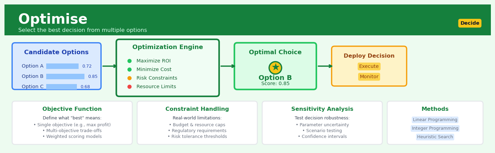

Optimise#


Optimise is a core transformation in the Decide workflow.
The 60-Second Version#
What it does: Optimise finds the best way to allocate limited resources to achieve your goal—maximum profit, minimum cost, or highest efficiency—while respecting all your business constraints.
When to use it: You face too many possible choices to evaluate manually, resources are scarce or expensive, and picking the wrong combination has real financial consequences.
What you get back: A specific recommendation for each decision variable (how much to produce, which routes to use, how to staff shifts) that provably delivers the best outcome possible under your constraints.
At a Glance
Difficulty |
Moderate |
Typical runtime |
Seconds to minutes for thousands of decisions |
What you bring |
Your objective, decision variables, constraints, and their mathematical relationships |
What you get |
Optimal values for each decision and the maximum/minimum objective achieved |
Heuristix bucket |
Decide — Decision Intelligence |
Optimise doesn’t predict the future—it assumes you’ve correctly specified all constraints and relationships; garbage in guarantees garbage out, no matter how “optimal” the answer appears.
Learning Objectives#
After reading this chapter, a business user will be able to:
Identify business scenarios where mathematical optimisation can improve decisions, including resource allocation, scheduling, portfolio selection, and supply chain planning problems with competing constraints.
Interpret optimisation outputs—including optimal solutions, shadow prices, and binding constraints—and translate their practical implications for executives and operational teams.
Evaluate trade-offs between competing business objectives using sensitivity analysis, and confidently recommend when to accept an optimal solution versus when to adjust constraints or reformulate the problem.
After reading this chapter, a data scientist will be able to:
Formulate real-world business problems as mathematical optimisation models by defining decision variables, objective functions, and constraints in the appropriate framework (linear, mixed-integer, or nonlinear).
Configure solver parameters—including gap tolerances, time limits, and algorithm selection—while understanding the trade-offs between solution quality, computational time, and problem complexity.
Diagnose infeasible or unbounded models by analyzing constraint conflicts, validate solutions against business logic, and recognize when approximations or problem reformulations are necessary to achieve tractable results.
Overview#
Optimise is a decision intelligence node that finds the best possible decision under constraints by formulating business problems as mathematical optimisation models. It belongs to the family of prescriptive analytics methods—techniques that go beyond prediction to recommend specific actions. The node supports linear programming, mixed-integer programming, and nonlinear optimisation, enabling users to maximise objectives (such as profit or efficiency) or minimise costs while respecting resource limitations, policy constraints, and business rules.
When to Use This#
Use this when:
Resource allocation under scarcity — You have limited resources (budget, inventory, personnel, capacity) and need to decide how to distribute them across competing demands to achieve the best outcome.
Production planning and scheduling — You need to determine what to produce, in what quantities, and in what sequence, subject to machine capacity, labour availability, and demand requirements.
Portfolio construction — You are selecting a mix of investments, products, or projects that maximises expected return (or minimises risk) while satisfying diversification rules, budget limits, or regulatory constraints.
Supply chain network design — You must decide where to locate facilities, how to route shipments, or how to balance inventory levels across a distribution network to minimise total cost.
Pricing and revenue management — You want to set prices across products, channels, or time periods to maximise revenue, subject to demand elasticity, competitive constraints, and margin floors.
Workforce scheduling — You need to assign employees to shifts, tasks, or locations while respecting labour laws, skill requirements, fairness policies, and coverage targets.
Marketing mix optimisation — You are allocating marketing spend across channels to maximise reach, conversions, or lifetime value within a fixed budget and channel capacity limits.
Blending and recipe formulation — You must determine the optimal mix of ingredients or raw materials to meet quality specifications at minimum cost.
Do NOT use this when:
The objective function is unknown or ill-defined — Optimisation requires a clear, quantifiable goal. If stakeholders cannot articulate what “better” means mathematically, begin with exploratory analysis or stakeholder alignment.
Constraints are soft preferences rather than hard limits — If violating a “constraint” is acceptable with some penalty, you may need multi-objective optimisation or goal programming rather than standard constrained optimisation.
The problem is purely predictive — If the task is forecasting demand or estimating churn probability with no subsequent decision, use predictive modelling nodes instead.
Questions This Answers#
Resource Allocation and Planning#
How should we distribute our $2M marketing budget across channels to maximise customer acquisition?
What’s the optimal production schedule for our three factories to meet Q4 demand while minimising overtime costs?
How many staff do we need on each shift to handle peak hours without overstaffing during quiet periods?
Should we prioritise Product A or Product B when our supplier can only deliver 60% of the raw materials we ordered?
Which warehouse locations should we use to fulfil next week’s orders at the lowest shipping cost?
Investment and Portfolio Decisions#
What mix of projects should we fund this year to get the best ROI within our $5M capital budget?
How should we rebalance our investment portfolio to maximise returns while keeping risk below our board-mandated threshold?
Which combination of suppliers gives us the best price and quality while ensuring we’re not too dependent on any single vendor?
Should we lease or buy our new fleet, and how many vehicles do we actually need to cover all our routes?
Pricing and Revenue Optimisation#
What prices should we set for each product line to maximise profit without losing market share?
How should we allocate our limited inventory across regions to maximise total revenue before the season ends?
Which customer orders should we accept this month when we can’t fulfil everything and still hit our margin targets?
What’s the optimal discount structure that drives volume without leaving money on the table?
How do we schedule our production changeovers to minimise downtime while meeting all our delivery commitments?
How It Works#
Imagine you’re packing for a two-week vacation with only a carry-on bag. You’ve laid out fifteen items on your bed: three pairs of shoes, five outfits, two jackets, toiletries, a laptop, books, and chargers. Each item has a different weight and takes up different space, but each also has value to you—the running shoes enable morning jogs, the nice jacket unlocks fancy dinners, the laptop means you can work remotely if needed. You can’t fit everything. You need to choose which combination of items maximizes your trip’s enjoyment while staying under the airline’s weight limit and fitting inside the bag’s dimensions. That’s optimization: searching through thousands of possible combinations to find the single best one that respects all your constraints.
OPTIMIZATION SEARCH PROCESS
Input: Goals + Constraints + Choices
┌─────────────────────────────────────┐
│ Maximize: Profit = 5x + 3y │
│ Constraints: 2x + y ≤ 100 (labor) │
│ x + 2y ≤ 80 (material) │
│ x,y ≥ 0 │
└─────────────────────────────────────┘
↓
┌──────────────────────┐
│ SEARCH ALGORITHM │
│ │
│ Tests combinations: │
│ (0,0) → profit=0 │
│ (50,0) → profit=250 │
│ (40,20) → profit=260 │ ← Best!
│ (30,35) → invalid │
│ (20,40) → profit=220 │
└──────────────────────┘
↓
Output: Optimal Decision
┌──────────────────────────────────────┐
│ Make 40 units of product X │
│ Make 20 units of product Y │
│ Expected profit: $260 │
│ Labor used: 100/100 (fully utilized) │
│ Material used: 80/80 (fully used) │
└──────────────────────────────────────┘
Step 1: Define the objective. You tell Optimise what you’re trying to achieve—maximize revenue, minimize delivery time, maximize customer satisfaction, minimize waste. This becomes the “score” the algorithm tries to improve. It’s the single number that defines success.
Step 2: Identify the decisions. You specify what variables you can actually control—how many units to produce, which routes to assign trucks, how much budget to allocate to each campaign, which shifts to schedule each employee. These are your levers.
Step 3: Encode the constraints. You translate business limitations into rules the algorithm must respect—total spending cannot exceed budget, each delivery truck has limited capacity, employees can’t work more than forty hours, production can’t start before materials arrive. These draw the boundaries of what’s possible.
Step 4: Search the solution space. The algorithm systematically explores different combinations of decisions. Unlike trial-and-error or gut feel, it uses mathematical properties to eliminate millions of inferior options without testing them, intelligently navigating toward better solutions.
Step 5: Verify feasibility. For each candidate solution, the algorithm checks whether all constraints are satisfied. Solutions that violate any rule—even by a tiny amount—are immediately discarded. Only valid, implementable plans move forward.
Step 6: Return the optimal solution. Once the algorithm proves no better solution exists, it outputs the specific decision values—produce exactly this much, assign these specific routes, schedule these exact shifts—along with the predicted outcome.
The key insight: Optimisation doesn’t just find a good answer through clever guessing—it mathematically guarantees you’ve found the best answer from among millions of possibilities, eliminating human bias and ensuring no opportunity is left on the table.
The Intuition#
Imagine you are a chef planning a week’s menu for a restaurant with a fixed food budget. You want to maximise customer satisfaction (measured by expected dishes sold) while respecting several realities: you cannot spend more than your budget, certain ingredients must be used before they spoil, and local regulations require offering at least two vegetarian options. You have hundreds of possible dishes to choose from, each with different costs, popularity ratings, and ingredient requirements. Trying every combination would take longer than the universe has existed. Optimisation gives you a systematic way to find the best menu without exhaustive search.
The key insight is that mathematical optimisation transforms business problems into a standard form: an objective function you want to maximise or minimise, and a set of constraints that define what solutions are permissible. Once in this form, powerful algorithms—developed over decades—can efficiently search the feasible region to find the optimal solution. The geometry of the problem often helps: for linear programs, the optimal solution always lies at a vertex of a polytope, so algorithms like the simplex method can walk along edges from vertex to vertex, improving the objective at each step, until no further improvement is possible.
What makes optimisation different from heuristics or trial-and-error is the guarantee of optimality (or, for harder problems, a known bound on how far from optimal the solution might be). When a linear program solves, you know with certainty that no other feasible solution scores better. When a mixed-integer program provides a solution with a 2% optimality gap, you know the true best answer is no more than 2% better than what you have. This mathematical rigour is why optimisation underpins trillion-dollar decisions in logistics, finance, and operations worldwide.
The Mathematics#
Problem Formulation#
A general mathematical optimisation problem takes the form:
where:
\(x = (x_1, x_2, \ldots, x_n)^T\) is the decision variable vector
\(f: \mathbb{R}^n \to \mathbb{R}\) is the objective function
\(g_i: \mathbb{R}^n \to \mathbb{R}\) are inequality constraint functions
\(h_j: \mathbb{R}^n \to \mathbb{R}\) are equality constraint functions
\(\mathcal{X}\) encodes variable domains (e.g., \(x_k \geq 0\), \(x_k \in \mathbb{Z}\))
Linear Programming (LP)#
When \(f\), \(g_i\), and \(h_j\) are all affine (linear plus constant), the problem is a linear program. The standard form is:
where \(c \in \mathbb{R}^n\) is the cost vector, \(A \in \mathbb{R}^{m \times n}\) is the constraint matrix, and \(b \in \mathbb{R}^m\) is the right-hand side vector.
Key assumptions:
Linearity — objective and constraints are linear in decision variables
Divisibility — decision variables are continuous (can take fractional values)
Certainty — all coefficients \(c\), \(A\), \(b\) are known with certainty
Non-negativity — variables bounded below (can be relaxed via transformation)
The feasible region \(\mathcal{F} = \{x : Ax = b, x \geq 0\}\) forms a convex polytope. The fundamental theorem of linear programming states:
Note
If an LP has an optimal solution, at least one optimal solution occurs at a vertex (basic feasible solution) of the feasible polytope.
The simplex algorithm exploits this by moving along edges of the polytope, improving the objective at each pivot, until reaching an optimal vertex. Interior point methods offer an alternative that traverses through the interior of the polytope with polynomial worst-case complexity.
Duality#
Every LP (the primal) has an associated dual problem:
The weak duality theorem states that for any feasible primal \(x\) and feasible dual \(y\):
The strong duality theorem guarantees that if either problem has a finite optimal solution, both do, and:
The dual variables \(y^*\) (shadow prices) have profound economic interpretation: \(y_i^*\) measures the marginal value of relaxing constraint \(i\) by one unit.
Mixed-Integer Programming (MIP)#
When some variables must take integer values, we have a mixed-integer program:
Binary variables (\(z_k \in \{0, 1\}\)) enable logical constraints:
Selection: \(z_k = 1\) if option \(k\) is chosen
If-then: \(x \leq M z\) forces \(x = 0\) when \(z = 0\) (big-M formulation)
Fixed charges: incur cost \(F_k\) only if activity \(k\) is used
MIP is NP-hard, but modern solvers use branch-and-bound with sophisticated cutting planes, presolve reductions, and heuristics to solve practical instances with millions of variables.
Nonlinear Programming (NLP)#
When \(f\) or constraints are nonlinear, Karush-Kuhn-Tucker (KKT) conditions characterise local optima. For the problem \(\min_x f(x)\) subject to \(g_i(x) \leq 0\) and \(h_j(x) = 0\):
For convex problems (convex \(f\), convex \(g_i\), affine \(h_j\)), KKT conditions are sufficient for global optimality.
Edge Cases and Degeneracy#
Condition |
Description |
Detection |
|---|---|---|
Infeasibility |
No \(x\) satisfies all constraints |
Solver returns infeasible status |
Unboundedness |
Objective can improve indefinitely |
Solver returns unbounded status |
Degeneracy |
Multiple optimal solutions exist |
Optimal objective achieved at multiple vertices |
Numerical ill-conditioning |
Near-singular constraint matrix |
Large condition number, solver warnings |
Understanding the Mathematics#
The Standard Form of a Linear Program#
The equation:
Read it aloud:
“Find the values of x that make the dot product of c and x as large as possible, while ensuring that when we multiply matrix A by x, every result stays less than or equal to the corresponding value in b, and all values in x must be non-negative.”
What each symbol means:
x = the decision variables (the choices we control, like how many units to produce)
c = the objective coefficients (profit or cost per unit of each decision)
c^T x = total objective value (sum of each decision multiplied by its coefficient)
A = the constraint matrix (how much of each resource every decision consumes)
b = the resource limits (maximum amounts available)
Ax ≤ b = resource constraints must not be exceeded
x ≥ 0 = non-negativity (can’t produce negative quantities)
A concrete numerical example:
A bakery makes croissants and muffins. Croissants earn \(3 profit, muffins earn \)2. You have 100 hours of labor and 80 kg of flour. Each croissant needs 0.5 hours and 0.3 kg flour; each muffin needs 0.3 hours and 0.4 kg flour.
Here, x = [croissants, muffins], c = [3, 2].
The objective: maximize 3 × croissants + 2 × muffins.
Constraints: 0.5 × croissants + 0.3 × muffins ≤ 100 (labor), and 0.3 × croissants + 0.4 × muffins ≤ 80 (flour).
If we try croissants = 120, muffins = 80: profit = 3(120) + 2(80) = $520. But labor used = 0.5(120) + 0.3(80) = 84 hours ✓, flour used = 0.3(120) + 0.4(80) = 68 kg ✓. Both constraints satisfied.
Why this equation matters:
This form translates every resource allocation problem into a structure computers can solve optimally—without it, we’d rely on guesswork and likely leave thousands of dollars on the table.
The Lagrangian for Constrained Optimization#
The equation:
Read it aloud:
“The Lagrangian equals the original objective function, minus a sum where each constraint violation is multiplied by its shadow price.”
What each symbol means:
L = the Lagrangian (a combined function incorporating objective and constraints)
f(x) = the original objective we want to maximize
g_i(x) = the left side of constraint i (resource consumption)
b_i = the limit for constraint i
λ_i = the shadow price (marginal value of one more unit of resource i)
The sum runs over all constraints
A concrete numerical example:
Back to the bakery. Suppose the optimal solution uses all 100 labor hours. The shadow price λ₁ = 4 means: if we had 101 hours instead of 100, profit would increase by approximately $4.
If the Lagrangian shows λ₁ = 4 and λ₂ = 1 (for flour), and we’re considering buying more resources, we should prioritize labor (worth \(4/hour) over flour (worth \)1/kg).
At optimum with croissants = 140, profit = $420. Labor constraint: 0.5(140) = 70 ≤ 100. The Lagrangian becomes 420 - 4(70 - 100) - 1(flour used - 80) = 420 + 120 - (slack) = adjusted objective.
Why this equation matters:
The Lagrangian reveals not just what to do, but what each constraint costs you—essential for negotiating supplier contracts or investing in capacity expansion.
Integer Programming Constraint#
The equation:
Read it aloud:
“The decision variables x must be integers.”
What each symbol means:
x = decision variables
∈ = “is an element of” or “must belong to”
ℤ = the set of all integers (…, -2, -1, 0, 1, 2, …)
n = the number of decision variables
A concrete numerical example:
You’re scheduling nurses for shifts. You can’t hire 3.7 nurses. If x₁ = Monday nurses and the optimal fractional solution says x₁ = 4.3, that’s meaningless. The integer constraint forces x₁ ∈ {0, 1, 2, 3, 4, 5, …}. The solver might return x₁ = 4 or x₁ = 5, depending on which better satisfies all constraints while remaining feasible.
Why this equation matters:
Real decisions—hire, build, ship—come in whole units; ignoring integrality produces plans that literally cannot be executed.
The Big Picture#
The mathematics of optimization converts business strategy into algebra. We describe what we want (the objective), what we’re constrained by (inequalities), and what’s actually controllable (decision variables). The optimizer then explores an astronomically large space of combinations—far beyond human capability—to prove which choice is best. Linear and integer programming succeed because they exploit geometric structure: feasible solutions form a polyhedron, and the optimum sits at a corner we can find efficiently. In one sentence: optimization mathematics turns “we need a better plan” into “here is the provably best plan, and here’s what it costs you when reality limits your options.”
Python Implementation#
"""
Optimise: Linear and Mixed-Integer Programming Examples
Demonstrates resource allocation and selection problems using scipy and PuLP.
"""
import numpy as np
import pandas as pd
from scipy.optimize import linprog, minimize
from scipy.optimize import LinearConstraint, Bounds
# =============================================================================
# Example 1: Linear Programming — Production Planning
# =============================================================================
# A manufacturer produces two products (A, B) with limited machine hours and
# raw materials. Maximise profit.
print("=" * 60)
print("Example 1: Linear Programming — Production Planning")
print("=" * 60)
# Decision variables: x[0] = units of Product A, x[1] = units of Product B
# Profits: Product A = $40/unit, Product B = $30/unit
# Constraints:
# Machine hours: 2*A + 1*B <= 100 hours
# Raw material: 1*A + 2*B <= 80 kg
# Non-negativity: A, B >= 0
# scipy.linprog minimises, so negate profit for maximisation
c = [-40, -30] # Negative because we're minimising
# Inequality constraints: A_ub @ x <= b_ub
A_ub = np.array([
[2, 1], # Machine hours constraint
[1, 2], # Raw material constraint
])
b_ub = np.array([100, 80])
# Bounds: 0 <= x[i] <= infinity
bounds = [(0, None), (0, None)]
# Solve the linear program
result = linprog(c, A_ub=A_ub, b_ub=b_ub, bounds=bounds, method='highs')
print(f"\nOptimal Solution Found: {result.success}")
print(f"Product A: {result.x[0]:.2f} units")
print(f"Product B: {result.x[1]:.2f} units")
print(f"Maximum Profit: ${-result.fun:.2f}") # Negate to get actual profit
print(f"Machine hours used: {A_ub[0] @ result.x:.2f} / 100")
print(f"Raw material used: {A_ub[1] @ result.x:.2f} / 80")
# =============================================================================
# Example 2: Mixed-Integer Programming — Project Selection
# =============================================================================
# Select projects to maximise NPV subject to budget and staffing constraints.
print("\n" + "=" * 60)
print("Example 2: Mixed-Integer Programming — Project Selection")
print("=" * 60)
# Using PuLP for MIP (install with: pip install pulp)
try:
from pulp import LpProblem, LpMaximize, LpVariable, lpSum, LpBinary, value
# Project data
projects = pd.DataFrame({
'project': ['Alpha', 'Beta', 'Gamma', 'Delta', 'Epsilon'],
'npv': [120, 85, 95, 70, 110], # NPV in $000s
'cost': [45, 30, 35, 20, 50], # Cost in $000s
'staff_months': [12, 8, 10, 5, 14] # Staff required
})
print("\nProject Data:")
print(projects.to_string(index=False))
# Constraints
BUDGET = 100 # $000s
STAFF_CAPACITY = 30 # staff-months
# Create the problem
prob = LpProblem("Project_Selection", LpMaximize)
# Binary decision variables: 1 if project selected, 0 otherwise
x = {p: LpVariable(f"select_{p}", cat=LpBinary)
for p in projects['project']}
# Objective: Maximise total NPV
prob += lpSum(projects.loc[i, 'npv'] * x[projects.loc[i, 'project']]
for i in projects.index), "Total_NPV"
# Budget constraint
prob += lpSum(projects.loc[i, 'cost'] * x[projects.loc[i, 'project']]
for i in projects.index) <= BUDGET, "Budget"
# Staff constraint
prob += lpSum(projects.loc[i, 'staff_months'] * x[projects.loc[i, 'project']]
for i in projects.index) <= STAFF_CAPACITY, "Staff"
# Solve
prob.solve()
print(f"\nOptimal Portfolio:")
selected = [p for p in projects['project'] if value(x[p]) > 0.5]
print(f"Selected Projects: {selected}")
selected_df = projects[projects['project'].isin(selected)]
print(f"Total NPV: ${selected_df['npv'].sum()}K")
print(f"Total Cost: ${selected_df['cost'].sum()}K (Budget: ${BUDGET}K)")
print(f"Total Staff: {selected_df['staff_months'].sum()} months (Capacity: {STAFF_CAPACITY})")
except ImportError:
print("PuLP not installed. Install with: pip install pulp")
# =============================================================================
# Example 3: Nonlinear Programming — Portfolio Optimisation
# =============================================================================
# Minimise portfolio variance subject to target return (Markowitz model)
print("\n" + "=" * 60)
print("Example 3: Nonlinear Programming — Portfolio Optimisation")
print("=" * 60)
# Simulated asset data
np.random.seed(42)
n_assets = 4
asset_names = ['Equities', 'Bonds', 'Real Estate', 'Commodities']
# Expected returns (annualised)
expected_returns = np.array([0.12, 0.05, 0.08, 0.06])
# Covariance matrix (annualised)
# Generate a valid positive semi-definite covariance matrix
volatilities = np.array([0.20, 0.05, 0.12, 0.18])
correlations = np.array([
[1.0, 0.2, 0.4, 0.3],
## Visualisations


## Using This in Heuristix
### What Data You'll Need
The Optimise node expects a **decision variables table** that defines what you're trying to decide. Each row represents one decision variable (like "units of Product A to make" or "whether to open Warehouse B").
Required columns:
- **Variable Name** (text): Unique identifier for each decision variable
- **Lower Bound** (numeric): Minimum allowed value (use 0 for non-negative variables)
- **Upper Bound** (numeric): Maximum allowed value (use a large number like 1000000 for "unlimited")
- **Objective Coefficient** (numeric): How much each unit contributes to your goal (profit per unit, cost per item, etc.)
Optional columns:
- **Variable Type** (text): "continuous", "integer", or "binary" (defaults to continuous)
- **Constraint Coefficients** (numeric): Additional columns defining resource usage per unit
**Example input:**
| Variable Name | Lower Bound | Upper Bound | Objective Coefficient | Labor Hours | Material Kg |
|---------------|-------------|-------------|-----------------------|-------------|-------------|
| Product_A | 0 | 500 | 25 | 2 | 3 |
| Product_B | 0 | 300 | 40 | 3 | 2 |
### Configuration Parameters
| Parameter | What It Controls | Default | When to Change It |
|-----------|------------------|---------|-------------------|
| **Objective** | Whether to maximize or minimize | Maximize | Switch to "Minimize" for cost, waste, or risk problems |
| **Optimization Type** | Linear, mixed-integer, or nonlinear | Linear | Use "Mixed-Integer" when decisions must be whole numbers (people, machines). Use "Nonlinear" for complex relationships |
| **Constraint Definitions** | Resource limits and business rules | None | Add rows like "Labor Hours ≤ 1000" or "Product_A ≥ 100" to enforce limits |
| **Solver Time Limit** | Maximum seconds to search for solution | 300 | Increase for complex problems with many variables; decrease for quick estimates |
| **Optimality Gap** | How close to perfect (0% = exact, 5% = within 5% of optimal) | 0% | Increase to 1-5% for faster solutions on large problems where "close enough" works |
### What You'll Get Back
The node outputs three things:
**1. Decision Table** — Your input table with a new **Optimal Value** column showing the recommended decision for each variable. This is your action plan.
**2. Solution Summary Card** displaying:
- **Objective Value**: The best achievable result (total profit, minimum cost, etc.)
- **Solution Status**: "Optimal" (found best answer), "Feasible" (found good answer), or "Infeasible" (no solution exists within constraints)
- **Solve Time**: How long the optimization took
**3. Sensitivity Report** (when available) — Shows how much objective coefficients or constraint limits could change before the optimal decision changes. Useful for "what-if" analysis.
### Connecting Downstream
- **Filter** node → To extract only selected decisions (e.g., where Optimal Value > 0)
- **Visualise** node → To create bar charts of recommended decisions or pie charts of resource allocation
- **Export** node → To push decisions directly to operational systems or reports
- **Calculate** node → To compute secondary metrics like total resource usage or revenue
### Quick Start: Product Mix Optimization
1. **Prepare your data** with one row per product, including profit per unit and resource requirements
2. **Connect data to Optimise node** and map Variable Name, bounds, and Objective Coefficient columns
3. **Set Objective to "Maximize"** and Optimization Type to "Linear"
4. **Add constraints** like "Total_Labor ≤ available_hours" using your constraint coefficient columns
5. **Run the node** and check the Solution Status is "Optimal"
6. **Review Optimal Value column** for how many units of each product to produce
### Practical Tips from the Field
- **Start simple**: Test with just 2-3 variables and one constraint before building your full model. Easier to debug.
- **Check for infeasibility**: If you get "Infeasible", your constraints are too restrictive. Relax bounds or limits one at a time to find the culprit.
- **Use integer sparingly**: Integer and binary variables slow solving dramatically. Only use them when decimals truly don't make sense.
- **Scale your numbers**: If coefficients vary wildly (0.001 to 1,000,000), divide or multiply columns to bring them into similar ranges. Improves numerical stability.
- **Save successful models**: Use the Template feature to save constraint definitions you'll reuse for monthly production planning or weekly scheduling.
## Config Recipes
### Recipe 1: Quick Exploration Mode
**When to use:** Initial problem scoping when you need to validate your objective function and constraints are correctly specified before investing in a full solve.
**Settings:**
| Parameter | Value | Why |
|-----------|-------|-----|
| `solver` | `'GLOP'` or `'CBC'` | Fast linear solver with minimal overhead |
| `time_limit` | `30` | Stop after 30 seconds to get any feasible solution |
| `relative_gap` | `0.10` | Accept solutions within 10% of optimal |
| `presolve` | `True` | Let solver simplify problem structure |
| `threads` | `1` | Avoid thread coordination overhead on small problems |
**What you get:** A feasible solution quickly that confirms your model structure works, typically within seconds for problems under 10,000 variables.
**Trade-off:** Solution quality may be far from optimal; use this only to debug formulation, not for actionable recommendations.
---
### Recipe 2: Production-Grade Solve
**When to use:** Final deployment where solution quality directly impacts business outcomes and compute time is acceptable (e.g., weekly production planning, quarterly portfolio allocation).
**Settings:**
| Parameter | Value | Why |
|-----------|-------|-----|
| `solver` | `'SCIP'` or `'Gurobi'` | Industrial-strength solver with advanced techniques |
| `time_limit` | `3600` | Allow up to 1 hour for convergence |
| `relative_gap` | `0.001` | Require solutions within 0.1% of proven optimum |
| `absolute_gap` | `1.0` | Stop if objective improvement drops below 1 unit |
| `threads` | `-1` | Use all available CPU cores |
| `emphasis` | `'optimality'` | Prioritize solution quality over feasibility speed |
**What you get:** Near-optimal solutions with mathematically proven quality guarantees suitable for high-stakes decision-making.
**Trade-off:** Significantly longer solve times; may not complete within time limit for very large problems (100,000+ integer variables).
---
### Recipe 3: Infeasible Problem Diagnosis
**When to use:** Your model returns "no feasible solution" and you need to identify which constraints are causing conflicts.
**Settings:**
| Parameter | Value | Why |
|-----------|-------|-----|
| `solver` | `'CBC'` or `'GLOP'` | Good diagnostic reporting |
| `relaxation_mode` | `'elastic'` | Allow constraint violations with penalties |
| `violation_penalty` | `1000000` | High cost makes violations visible in solution |
| `log_level` | `'verbose'` | Show detailed solver progress and conflict detection |
| `write_model` | `True` | Export model file for external inspection |
**What you get:** A solution showing exactly which constraints cannot be satisfied simultaneously, with violation magnitudes.
**Trade-off:** Not a true optimization—you're diagnosing, not solving; requires manual constraint adjustment afterward.
---
### Recipe 4: Real-Time Reoptimization
**When to use:** Live systems requiring rapid re-solving as conditions change (e.g., dynamic pricing, ride-sharing dispatch, intraday trading adjustment).
**Settings:**
| Parameter | Value | Why |
|-----------|-------|-----|
| `solver` | `'GLOP'` | Fastest for LP; use `'CBC'` if integer variables needed |
| `warm_start` | `True` | Initialize from previous solution |
| `time_limit` | `5` | Hard stop at 5 seconds for responsiveness |
| `relative_gap` | `0.05` | Accept "good enough" solutions quickly |
| `presolve` | `False` | Skip when problem structure unchanged from last solve |
**What you get:** Sub-10-second response times enabling continuous re-optimization as new data arrives.
**Trade-off:** Requires incremental problem formulation; solutions are approximate but delivered fast enough for operational decisions.
## Business Applications
**Financial Services**
A mid-sized UK mortgage lender needs to allocate £400M in lending capital across customer segments while managing risk exposure, regulatory capital requirements, and profit targets. Optimise formulates this as a constrained optimisation problem, balancing expected returns against probability of default, loan-to-value ratios, and sector concentration limits mandated by the Financial Conduct Authority. The result: a 22% improvement in risk-adjusted return on capital compared to the previous rules-based allocation, equivalent to £3.2M additional annual profit without increasing risk appetite.
**Retail**
An e-commerce retailer with 2 million SKUs faces the markdown pricing problem: how to clear seasonal inventory before it becomes obsolete while maximising revenue. Each week, pricing managers must decide which products to discount and by how much, considering demand elasticity, competitor prices, warehouse capacity costs, and brand positioning constraints. Optimise evaluates millions of price-quantity scenarios simultaneously, recommending optimal markdown schedules product-by-product. The retailer recovered 18% more revenue from end-of-season inventory and reduced write-offs from 12% to 7% of seasonal stock value.
**Healthcare**
A regional hospital network operating 14 facilities struggles with operating theatre utilisation: emergency cases disrupt elective surgery schedules, surgeon availability varies by site, and patient outcomes depend on timely access. Optimise creates daily theatre allocation plans that maximise patient throughput while respecting surgeon rotas, equipment sterilisation cycles, anaesthetist availability, and clinical priority scores. Theatre utilisation improved from 74% to 89%, reducing the elective surgery waiting list by 2,100 patients within six months.
**Insurance**
A commercial property insurer must decide which renewal policies to underwrite, at what premium, and how much risk to cede to reinsurers—all while staying within risk appetite boundaries and profit targets. Manual underwriting relies on heuristics that leave money on the table or accept unprofitable risks. Optimise models this as a portfolio optimisation problem, maximising expected underwriting profit subject to probable maximum loss constraints, diversification requirements, and reinsurance treaty terms. The insurer improved combined ratio by 4.7 points while growing premium volume by 12%.
**Manufacturing**
A pharmaceutical contract manufacturer operates five production lines that can each produce multiple drug formulations, but changeovers require expensive cleaning validation and create downtime. Production planners must decide which orders to run on which lines, in which sequence, balancing customer delivery promises, inventory holding costs, and line efficiency. Optimise generates production schedules that minimise changeover costs and maximise on-time delivery, reducing changeover downtime from 18% to 11% of available production hours—equivalent to adding half a production line without capital expenditure.
**Logistics**
A national grocery chain delivers to 840 stores using a fleet of 320 refrigerated lorries from 12 distribution centres, but routing decisions made site-by-site create inefficient overlaps and underutilised capacity. Optimise solves the multi-depot vehicle routing problem with time windows, temperature zones, driver hours regulations, and store receiving dock constraints. The retailer cut total weekly mileage by 140,000 kilometres, reducing fuel costs by £1.8M annually and enabling service expansion without fleet growth.
**Marketing**
A digital subscription business allocates £2.4M monthly across eight paid channels (search, social, display, affiliates) but can't determine the optimal spend per channel when each has diminishing returns, interaction effects, and budget floors required to maintain partnerships. Optimise models channel response curves and cross-channel attribution, recommending budget allocations that maximise subscriber acquisition within cost-per-acquisition targets. Customer acquisition costs fell 19% while volume increased 7%, improving unit economics across the entire funnel.
**Telecommunications**
A mobile network operator must decide where to upgrade cell towers to 5G given a £60M capital budget, competing coverage and capacity objectives, and contractual service-level agreements with enterprise customers. Optimise evaluates thousands of tower upgrade combinations, maximising population coverage and network capacity while prioritising commercially valuable locations. The model identified a deployment sequence delivering 34% more coverage per pound spent than the engineering team's initial plan.
**Energy**
A renewable energy trader manages a portfolio of wind farms and must decide hourly which forward contracts to enter in day-ahead electricity markets, given weather forecasts, price volatility, and portfolio risk limits. Optimise balances expected revenue against downside risk across thousands of possible weather and price scenarios. Trading margin improved from £4.20 to £5.80 per MWh while reducing value-at-risk exposure.
**Public Sector**
A city council assigns 180 social workers to 2,400 active child protection cases, balancing caseload equity, worker specialisation, geographic proximity, and statutory visit requirements. Optimise generates assignment plans that minimise travel time while respecting workload caps and continuity-of-care preferences, reducing administrative burden by 25 hours per worker per month—time redirected to frontline casework.
**SaaS / Technology**
A B2B SaaS platform offers tiered pricing but struggles to set feature limits per tier (API calls, storage, users) that maximise revenue while encouraging upgrades without cannibalising enterprise deals. Optimise models customer willingness-to-pay distributions and upgrade propensity, recommending tier structures that increased annual contract value by 16% and reduced churn among mid-tier customers from 8% to 5%.
## Worked Example
**The Meeting**
Lena Kovač, a supply chain analyst at Greenhaven Foods, sat across from the VP of Operations in a cramped conference room overlooking their Chicago distribution center. "We're hemorrhaging money on overnight shipments," the VP said, tapping a spreadsheet. "Last quarter alone, we spent $340,000 on expedited freight because our three warehouses keep running out of the wrong products at the wrong time." The company operated distribution centers in Chicago, Atlanta, and Denver, each serving different regional grocery chains. The question was straightforward but critical: how should they allocate their inventory across the three warehouses to minimize total shipping costs while meeting customer demand? A 10% reduction in logistics costs would add nearly half a million dollars to annual profit.
**The Data**
Lena pulled shipment records from the past six months and aggregated them into a cost matrix. The dataset showed the cost per pallet to ship from each warehouse to each customer region, along with warehouse capacity limits and regional demand forecasts:
| From Warehouse | To Region | Cost per Pallet | Warehouse Capacity (pallets) | Region Demand (pallets) |
|----------------|-----------|-----------------|------------------------------|-------------------------|
| Chicago | Midwest | $45 | 5,000 | 3,200 |
| Chicago | Southeast | $120 | 5,000 | 2,800 |
| Atlanta | Midwest | $95 | 4,200 | 3,200 |
| Atlanta | Southeast | $50 | 4,200 | 2,800 |
| Denver | West | $40 | 3,500 | 2,400 |
The data wasn't perfect—some historical routes had incomplete cost records, and she had to estimate a few values based on mileage and average freight rates. But it was good enough to model the core trade-offs.
**The Setup**
Lena opened the Optimise node in Heuristix and began translating the business problem into mathematical terms. Her objective was clear: minimize total shipping cost. She defined decision variables for each warehouse-to-region route—how many pallets to ship on each path. Then she added constraints: no warehouse could ship more than its capacity, and each region had to receive at least its forecasted demand. She chose linear programming as the solver type since all relationships were linear. "The beauty of this," she muttered to herself while configuring the node, "is that the model will find solutions I'd never think to try manually—like maybe sending some Midwest orders from Atlanta even though it seems counterintuitive."
**The Results**
The Optimise node ran in under two seconds and returned an allocation plan:
| From Warehouse | To Region | Pallets to Ship | Cost |
|----------------|-----------|-----------------|-----------|
| Chicago | Midwest | 3,200 | $144,000 |
| Chicago | Southeast | 1,800 | $216,000 |
| Atlanta | Southeast | 1,000 | $50,000 |
| Denver | West | 2,400 | $96,000 |
| **Total** | | **8,400** | **$506,000** |
Lena walked through the numbers: Chicago would handle all Midwest demand locally at the cheapest rate, plus 1,800 pallets to the Southeast. Atlanta would pick up the remaining Southeast demand. Denver would exclusively serve the West. The total quarterly cost came to $506,000—a $94,000 reduction from current spend, representing an 18.5% improvement.
**The Insight**
The surprise was Chicago. Under the current ad-hoc system, Chicago had been trying to serve both Midwest and Southeast proportionally, forcing expensive last-minute shipments when Southeast demand spiked. The optimization revealed that Chicago should **max out** its Midwest allocation first, where it had a huge cost advantage, then use remaining capacity for Southeast. Atlanta, despite being slightly farther from some Southeast customers, should absorb overflow because its per-pallet rate was still far better than Chicago's expedited pricing. "We've been thinking about this warehouse-by-warehouse," Lena realized. "The model thinks about it as one integrated network."
**The Decision**
Lena presented the findings at the monthly operations review two weeks later. The VP was skeptical at first—"You want Atlanta shipping *more* to the Southeast when they're already at 70% capacity?"—until Lena showed that Atlanta still had 1,200 pallets of headroom and the math was unambiguous. The team agreed to a 90-day pilot using the optimized allocation. By the end of the quarter, logistics costs had dropped by $89,000—slightly under the projection due to some demand volatility, but still a 17% improvement. The savings were reinvested in expanding Denver's capacity to better serve the growing West Coast market.
**What Lena Would Do Differently**
Looking back, Lena wished she'd incorporated uncertainty into the model from the start. Demand forecasts were point estimates, but reality varied by ±15%. A stochastic or robust optimization approach would have provided allocation strategies that performed well across demand scenarios, not just the expected case. She also realized she'd ignored cross-warehouse transfers—could Atlanta send pallets to Denver when needed? Including that option might unlock even more savings. "Next time," she noted in her project log, "I'd model this as a multi-period problem with inventory buffers."
```python
# Lena's optimization script for warehouse allocation
import pulp
# Define the problem
prob = pulp.LpProblem("Warehouse_Allocation", pulp.LpMinimize)
# Shipping costs (warehouse -> region)
costs = {
('Chicago', 'Midwest'): 45,
('Chicago', 'Southeast'): 120,
('Atlanta', 'Southeast'): 50,
('Denver', 'West'): 40
}
# Decision variables: pallets to ship on each route
x = pulp.LpVariable.dicts("ship", costs.keys(), lowBound=0)
# Objective: minimize total cost
prob += pulp.lpSum([costs[route] * x[route] for route in costs])
# Capacity constraints
prob += x[('Chicago','Midwest')] + x[('Chicago','Southeast')] <= 5000
prob += x[('Atlanta','Southeast')] <= 4200
prob += x[('Denver','West')] <= 3500
# Demand constraints
prob += x[('Chicago','Midwest')] >= 3200 # Midwest demand
prob += x[('Chicago','Southeast')] + x[('Atlanta','Southeast')] >= 2800
prob += x[('Denver','West')] >= 2400
# Solve
prob.solve()
print(f"Total Cost: ${pulp.value(prob.objective):,.0f}")
for route in x:
print(f"{route}: {x[route].varValue} pallets")
Interpreting Your Results#
You’ve just run Optimise and the node has returned a solution. Before celebrating or panicking, let’s decode exactly what you’re looking at.
The Objective Value#
Plain-English meaning: This is the final score of your best possible decision. If you asked to maximise profit, this number is the maximum profit achievable given your constraints. If you minimised cost, this is the lowest cost you can reach without breaking any rules.
Concrete benchmarks: Compare this against your current baseline. If you currently make £500K profit and Optimise returns £650K, you’ve found a 30% improvement opportunity. Improvements under 5% might not justify implementation costs. Between 5–15% warrants serious consideration. Above 15% typically means either a genuinely transformative opportunity or an error in your model assumptions—verify your constraints carefully.
Red flags:
An objective value of zero or negative when maximising profit suggests infeasible constraints or a modelling error
A value orders of magnitude different from your baseline (e.g., current costs are £100K, optimised costs show £5K) almost certainly indicates missing constraints
The dreaded “No feasible solution found” message means your constraints are impossible to satisfy simultaneously—you’ve asked for the mathematically impossible
The Decision Variables Table#
Plain-English meaning: Each row shows the recommended value for a decision you control. If optimising production, you’ll see quantities to produce. If scheduling staff, you’ll see shift assignments. These are your action items.
Reading the values: Most variables will be either at their bounds (maximum or minimum allowed) or at zero. In mixed-integer problems, binary variables (0 or 1) represent yes/no decisions: 1 means “do this,” 0 means “don’t.” Fractional values in supposedly integer variables indicate the solver didn’t finish—check your solution status.
Red flags:
All variables at their upper bounds suggests you’re capacity-constrained and should investigate relaxing those limits
Large numbers of variables at exactly zero might indicate overly conservative constraints or penalty costs set too high
Non-integer values when you expected integers means the solver timed out or hit iteration limits—your solution is approximate, not optimal
The Shadow Prices (Dual Values)#
Plain-English meaning: These tell you how much your objective would improve if you relaxed each constraint by one unit. If the shadow price on “warehouse capacity ≤ 1000 units” is £45, then increasing capacity to 1001 units would improve profit by approximately £45.
Concrete benchmarks: Shadow prices above £100 per unit indicate high-value bottlenecks worth investigating immediately. Between £20–£100 suggests moderate priority. Below £5 means this constraint isn’t currently limiting you—focus elsewhere. A shadow price of zero means you have slack capacity on that constraint.
Red flags:
Extremely high shadow prices (1000× your typical margins) suggest numerical scaling issues in your model
All constraints showing zero shadow prices means you’re not using your resources fully—you likely have excessive capacity or missing objectives
Constraint Slack/Surplus#
Plain-English meaning: How much “room” remains in each constraint. If your budget constraint allows £10,000 and the optimal solution uses £9,200, you have £800 slack.
Reading multiple outputs together: Pair this with shadow prices. High shadow price + zero slack = critical bottleneck. Zero shadow price + large slack = unused resource. This combination reveals where to invest next.
Sanity Check Checklist#
Before trusting your results:
Constraint violation check: Manually verify 2–3 constraints are satisfied. Calculate the totals yourself using the recommended decision variables.
Order of magnitude: Is the objective value within 10× of your current performance? If not, hunt for errors.
Integer verification: If you specified integer variables, confirm the output shows whole numbers, not decimals.
Binding constraint count: At least some constraints should be “tight” (slack = 0). If all show slack, you’ve modelled an unconstrained problem.
Solution status: Confirm the solver reports “Optimal” not “Feasible” or “Time limit reached”—the latter means you have a good solution but possibly not the best.
Good Enough to Act On?#
If your solution is marked “Optimal,” your objective value improves on baseline by >5%, no red flags appear in the checklist above, and you can explain the top 3 decision variable recommendations to a colleague in plain English, you have an actionable result. Stop optimising the optimisation and start implementing.
Decision Guidance#
What This Result Is Telling You#
When Optimise returns a solution, it’s providing you with a specific action plan that represents the mathematically best decision given your constraints and objectives. This isn’t a forecast or a probability—it’s a prescription. If you asked the system to maximise profit from your product mix while staying within manufacturing capacity, the result tells you exactly how many units of each product to produce. If you optimised a logistics network, you’re seeing which routes to use, which warehouses to stock, and what quantities to move. The numbers you’re looking at are intended to be implemented directly as operational decisions.
The optimal value—the final objective achieved—is your benchmark. It represents the ceiling of what’s possible under current constraints. If it shows a 15% profit improvement over your current approach, that’s not a prediction of what might happen; it’s what will happen if you execute the recommended decisions and your model accurately reflects reality. Pay attention to which constraints are binding (fully utilised) versus those with slack (unused capacity). Binding constraints reveal your bottlenecks—the resources or rules that are actually limiting your performance.
Sensitivity analysis, if included, shows you how robust your solution is to real-world variations. If a small change in demand causes the optimal decision to flip completely, you’re looking at a fragile plan that needs buffering or contingency rules. If the solution remains stable across reasonable ranges, you can implement with confidence. The shadow prices (dual values) on constraints tell you the monetary value of relaxing each limitation—this is your prioritised roadmap for capacity expansion or policy negotiation.
Decision Points#
If you see this… |
It means… |
Recommended action |
Who acts on this |
|---|---|---|---|
Optimal value improves current performance by >10% and all constraints have sufficient data quality scores |
Your current approach is leaving significant value on the table and the model is reliable |
Implement the recommended decisions in a pilot region or product line within the next planning cycle |
Operations Manager, Supply Chain Director |
3+ constraints are binding at their exact limits |
You have multiple simultaneous bottlenecks limiting performance |
Prioritise relaxing the constraint with the highest shadow price; negotiate exceptions or invest in that capacity first |
Resource Planning Lead, CFO |
Optimal solution changes by >20% when a key parameter varies by just 5% |
The solution is highly sensitive to uncertain inputs |
Build decision rules that cover multiple scenarios rather than implementing a single optimal plan; consider robust optimisation |
Strategy Team, Decision Owner |
Gap between optimal value and best feasible solution found is <2% |
The solver has found a provably near-optimal solution |
Proceed with implementation; the remaining potential improvement doesn’t justify further optimisation effort |
Business Unit Leader |
Multiple decision variables set to zero in the optimal solution |
Those options (products, routes, suppliers) shouldn’t be used under current conditions |
Phase out or discontinue those options; reallocate resources to active decision variables |
Portfolio Manager, Procurement Head |
When to Proceed vs. Investigate Further#
Proceed with confidence when:
The optimal solution is stable across ±10% variation in uncertain parameters
All binding constraints have clean, validated data with <5% known error rates
The model has been validated against historical periods and shows <8% deviation from actual outcomes
Stakeholders who will execute the decisions have reviewed and validated the constraints as realistic
Proceed with caution when:
The optimal value is within 15% of current performance (modest improvement with implementation risk)
1–2 key parameters are estimated rather than measured directly
The solution hasn’t been tested in a pilot environment but model structure has been validated
Shadow prices suggest high value in relaxing constraints that would take >6 months to address
Investigate before acting when:
Optimal decisions contradict strong domain expert intuition (either your model is wrong or you’ve discovered a genuine insight—determine which)
The solver terminated before reaching optimality and the gap is >5%
Required data inputs rely on manual collection or have known systematic biases
Implementing the solution would require policy changes that haven’t been vetted with legal/compliance teams
Do not use these results yet when:
The feasible region is empty (no solution exists)—your constraints are impossible to satisfy simultaneously
The solver reports the problem is unbounded (objective can grow infinitely)—you’re missing essential constraints
More than 30% of your input parameters are rough estimates
The model was built without input from the people who will execute the decisions
The Cost of Getting This Wrong#
Misinterpreting optimisation results leads to two costly failure modes. First, over-confidence in a fragile solution causes operational chaos when reality deviates slightly from your model. A manufacturer implements an optimal production schedule that leaves zero buffer capacity, then faces a 3% demand spike they can’t fulfil, losing a major customer and \(2M in annual revenue. The optimisation was mathematically correct but practically brittle. Second, ignoring binding constraints wastes strategic investment. A retailer optimises their distribution network, sees that warehouse capacity has a high shadow price, but instead invests in delivery fleet expansion (a non-binding constraint). They spend \)5M on trucks that sit idle because they still can’t get products out of the bottlenecked warehouses. The model explicitly told them where the problem was, but they acted on intuition instead. In both cases, the mathematics was sound—the failure occurred in translation from optimal solution to operational reality.
Common Pitfalls#
The Infeasibility Trap
Here’s what happened: A supply chain analyst at a manufacturing company was optimizing production schedules across three plants. They set minimum quality thresholds, maximum overtime limits, and delivery deadlines—all reasonable constraints drawn from existing policies. The model returned “No feasible solution found.” They concluded the optimization software was broken and reverted to manual scheduling.
Why it happens: When faced with infeasibility, the instinct is to blame the tool rather than recognize that the constraints themselves are mathematically incompatible. The real world operates with implicit priority—managers break rules when needed—but optimization models don’t know which constraint to relax.
How to detect it: The solver returns status codes like “INFEASIBLE” or “NO_SOLUTION” within seconds, often without even starting to iterate. Check the solver log for constraint violation messages. Modern solvers will often identify the “irreducible infeasible set”—the smallest group of constraints that cannot simultaneously be satisfied.
The fix: Implement constraint relaxation systematically. Convert hard constraints to soft constraints with penalty terms, or use a two-phase approach: first solve to minimize constraint violations, then optimize the objective using those relaxed bounds.
The Local Optimum Delusion
Here’s what happened: A pricing analyst was optimizing discount structures for a retail promotion using a nonlinear model. The optimizer converged quickly to a solution showing 12% profit improvement. They deployed it immediately. Three weeks later, a colleague ran the same model with different starting values and found a solution with 31% improvement.
Why it happens: Nonlinear and integer programming problems often have multiple local optima. Many solvers use gradient-based methods that climb to the nearest peak, not necessarily the highest one. The speed of convergence creates false confidence.
How to detect it: Run the optimization multiple times with randomized starting points. If you get substantially different objective values with the same constraints, you’re finding different local optima. Check the solver’s optimality gap metric—if it’s large (>5%) or undefined, you haven’t proven global optimality.
The fix: For nonlinear problems, use multi-start strategies or global optimization solvers. For mixed-integer problems, let the solver run longer to close the optimality gap, or use gap tolerance settings (like 1-2%) appropriate to your business context.
The Phantom Constraint
Here’s what happened: A junior data scientist was optimizing workforce schedules for a call center. They included every business rule they’d documented: shift lengths, break times, coverage requirements, skill matching. The model recommended a schedule that technically satisfied all constraints but had agents switching between three different roles in a single day—something no manager would accept but wasn’t explicitly forbidden.
Why it happens: Optimization finds solutions that satisfy the mathematical representation, not the unspoken common sense. Experienced practitioners carry tacit knowledge about what constitutes a “reasonable” solution that never makes it into the constraint set.
How to detect it: Present solutions to domain experts before deployment. Watch for reactions like “Well, technically that works, but…” or “We’d never actually do that.” These signal missing constraints. Also check for unusual patterns in the decision variables—extreme values, rapid switching, or unexpected allocations.
The fix: Build a validation phase into your workflow where subject matter experts review sample solutions. Document rejected patterns as new constraints and re-solve.
The Precision Theater
Here’s what happened: An operations manager was reviewing an optimized delivery route plan that specified a truck should arrive at Customer Site 7 at exactly 14:23:17. They spent hours debating whether 14:20 or 14:25 was more realistic, missing that the model had routed trucks through a depot that would be closed for maintenance that week.
Why it happens: Optimization outputs look authoritative—precise numbers imply accuracy. Stakeholders focus on minor details they understand (exact times) while missing major issues (wrong depot) because they trust the model’s overall logic.
How to detect it: Check if discussions focus on the precision of outputs rather than validation of inputs and constraints. Look for reports showing times to the second or costs to the penny when the underlying data has much coarser granularity.
The fix: Round outputs to match input precision and emphasize uncertainty ranges in presentations. Always validate that master data (facility locations, operating hours, capacities) is current before discussing solution details.
The Objective Function Mismatch
Here’s what happened: A logistics team optimized warehouse placement to minimize total transportation distance. The solution recommended closing a warehouse near their largest customer cluster. When challenged, the analyst defended it: “The math is right—average distance decreased by 8%.” But customer complaints surged because delivery times to premium accounts increased.
Why it happens: The objective function encoded in the model may not capture what the business actually values. “Minimize distance” is mathematically clean but ignores customer priority, service level agreements, and strategic relationships.
How to detect it: Solutions that are “mathematically optimal” but face immediate business pushback signal objective function misalignment. Check if your objective is a proxy (like distance) for what you really care about (like customer satisfaction or cost).
The fix: Work backward from business goals to mathematical objectives. Use weighted objective functions that balance multiple priorities, or add constraints that protect critical business requirements even if they reduce the primary metric.
The Stale Data Mirage
Here’s what happened: An experienced analyst optimized inventory levels using a model that had been running successfully for two years. Suddenly, the recommendations led to consistent stockouts. Investigation revealed that supplier lead times had increased by 40% during a logistics crisis, but the model was still using historical averages.
Why it happens: Optimization models in production become invisible infrastructure. Unlike prediction models that get monitored for accuracy drift, optimization models fail silently—the math still works, but the recommendations become poor because the world changed.
How to detect it: Monitor the real-world outcomes of deployed optimization solutions, not just whether the solver converges. Track metrics like “recommendation acceptance rate” (how often humans override the model) and “outcome variance” (difference between projected and actual results).
The fix: Implement input data validation checks that flag when key parameters drift beyond historical ranges. Schedule regular model reviews triggered by business changes, not just calendar dates.
The Constraint Relaxation Cascade
Here’s what happened: A production planner was optimizing manufacturing schedules. The initial model was infeasible, so they relaxed the overtime constraint. Still infeasible—relaxed the inventory limit. Still infeasible—relaxed quality inspection requirements. The final model solved but recommended a schedule that violated safety regulations, which had been relaxed into oblivion through iterative tweaking.
Why it happens: Under deadline pressure, analysts relax constraints one at a time without tracking the cumulative impact. Each individual relaxation seems minor, but together they drift far from acceptable solutions.
How to detect it: Review your model’s version history. If you see multiple constraint relaxations without corresponding business approvals, you’re in cascade territory. Check if any “soft” constraints have penalty weights that have been reduced to near-zero.
The fix: Categorize constraints into non-negotiable (regulatory, safety, contractual) and flexible (efficiency, preference) before you start. Only relax flexible constraints, and document each relaxation with business justification and stakeholder approval.
Common Misconceptions#
“If my optimisation model runs and gives me an answer, the answer must be correct”
Why people believe this: Mathematical optimisation produces precise numerical outputs from rigorous algorithms. When you receive a solution with objective values calculated to multiple decimal places, it carries an aura of mathematical certainty. The software didn’t crash or throw errors, so surely it found the right answer.
The truth: The optimiser is answering exactly the question you asked—which may not be the question you meant to ask. A model can be mathematically optimal while being completely useless if your constraints are mis-specified, your objective function doesn’t capture what you actually value, or your data contains errors. The optimiser has no understanding of your business context. It will happily tell you to schedule all employees for 23.9 hours if you forgot to add daily shift constraints, or to manufacture products you discontinued last year if you’re using outdated data. Optimality is always relative to the model you built, not to reality.
The real-world consequence: A logistics company optimised delivery routes and confidently implemented the solution, only to have drivers report that multiple “optimal” routes required illegal U-turns and sent trucks down roads with weight restrictions. The model was mathematically perfect but operationally useless because geometric distance didn’t account for actual road rules. They wasted two weeks of planning and lost driver trust in the system.
“Optimisation is just for big, complex problems with millions of variables”
Why people believe this: Academic papers and vendor case studies showcase impressive large-scale applications—airline scheduling with thousands of flights, supply chain networks spanning continents. The mathematical machinery seems like overkill for everyday decisions.
The truth: Some of the highest-impact optimisation applications solve small problems that get repeated constantly. A pricing decision with five products and three constraints, repeated weekly, creates enormous cumulative value. A shift schedule with twenty employees might only have hundreds of variables, but solving it optimally every month for a year prevents thousands of hours of manual trial-and-error and consistently produces better outcomes than intuition. The value isn’t in model size—it’s in codifying business logic so decisions are consistent, auditable, and actually respect all constraints simultaneously, which humans struggle to do even for “small” problems.
The real-world consequence: A regional distributor kept manually planning warehouse restocking because “it’s only four warehouses, we don’t need fancy optimisation.” After finally building a simple model, they discovered their intuitive approach had been consistently over-stocking slow-moving items and under-stocking fast movers, tying up 18% more working capital than necessary. The “simple” problem had enough interacting constraints that human judgment couldn’t track all the trade-offs.
“Getting a solution 90% optimal is easy; that last 10% is where all the work goes”
Why people believe this: This mirrors experience from many domains where the Pareto principle applies—getting most of the value requires little effort. Plus, you often see partial solutions quickly, then watch the solver grind away for hours to prove optimality.
The truth: In optimisation, feasibility is often the hard part. Finding any solution that satisfies all constraints can be harder than finding the best solution once you know feasible solutions exist. Many real problems have tightly interconnected constraints where you can’t improve one objective without violating some constraint. That “90% solution” might not be 90% of optimal—it might be the best feasible solution, and what looks like slow progress toward the final 10% is actually the solver proving no better feasible solution exists.
The real-world consequence: A manufacturing scheduler stopped their optimiser at “good enough” after 10 minutes to avoid the hour-long solve time, thinking they were accepting 95% optimality for speed. Later analysis revealed the final solution was actually 40% better on a key metric—the early solution just looked reasonable but was barely feasible.
How This Connects#
Before This Node#
Filter commonly precedes Optimise to remove infeasible or out-of-scope options from the decision space—filtering out discontinued products, unavailable time slots, or geographically restricted resources ensures the optimisation model only considers valid alternatives. Bad upstream data here means including phantom inventory or expired contracts, which leads Optimise to recommend decisions that cannot physically be executed.
Aggregate feeds in summarised resource availability, demand totals, or capacity limits by time period or category, providing the constraint boundaries that Optimise needs to respect—such as weekly labour hours available or monthly budget caps. If aggregation is done at the wrong granularity (e.g., annual totals when weekly constraints matter), Optimise will produce solutions that violate real operational limits.
Predict supplies forecasted demand, expected returns, or probability estimates that become inputs to the objective function or constraints—like predicted customer demand per product or anticipated equipment failure rates. Poor prediction quality (high error, biased forecasts) causes Optimise to allocate resources toward the wrong priorities, leaving actual demand unmet or capital misallocated.
Join combines decision variables with their associated costs, capacities, or profit margins from reference tables, ensuring each option in the model carries accurate economic parameters. Missing or mismatched joins result in optimisation with placeholder zeros or nulls, producing solutions that ignore critical cost differences or resource limitations.
Calculate derives intermediate metrics like unit contribution margin, capacity utilisation rates, or penalty costs that feed directly into the objective function or constraint formulas. Errors in these calculated fields—such as mixing gross and net margins—cause Optimise to maximise the wrong quantity or respect constraints that don’t reflect business reality.
Pivot reshapes data into the matrix format required by many optimisation solvers, transforming long-form transaction data into decision variable arrays with proper indexing. Badly structured input (ragged arrays, inconsistent dimensions) breaks the mathematical model setup, causing solver errors or silently incorrect constraint definitions.
After This Node#
Report presents the optimal decision variables and objective value in business-friendly dashboards—showing which products to produce, which routes to assign, or which projects to fund—making the solution actionable for decision-makers. Optimise’s structured output (decision variables with clear labels and values) maps naturally into tabular reports and visualisations.
Calculate applies the optimal decisions back to granular records, computing implied inventory levels, machine schedules, or shift assignments at the transaction level for operational execution. Optimise’s solution variables serve as input parameters to these downstream calculations.
Export sends optimal plans to ERP systems, scheduling software, or procurement platforms where the recommended decisions are executed—such as generating purchase orders at optimised quantities or updating production schedules. Optimise’s output format is typically clean and schema-consistent, reducing integration friction.
What-If explores sensitivity by re-running Optimise under alternative scenarios (higher demand, constrained supply), comparing how optimal decisions change and quantifying decision robustness. Optimise’s deterministic solutions provide the baseline case for structured scenario analysis.
Common Pipeline Patterns#
Production Planning Pipeline: Predict (demand forecast) → Aggregate (capacity by line) → Optimise (production schedule) → Calculate (material requirements) → Export (to MES)—minimises cost while meeting forecasted demand within equipment capacity, typically achieving 5–15% cost reduction versus heuristic scheduling.
Marketing Budget Allocation: Join (campaign costs and reach) → Calculate (expected ROI per channel) → Optimise (budget distribution) → Report (recommended spend) → What-If (sensitivity to budget changes)—maximises expected conversions under total budget constraint, often improving ROI 10–25% versus equal allocation.
Workforce Rostering: Filter (available staff) → Aggregate (demand by shift) → Optimise (shift assignments) → Calculate (labour cost totals) → Export (to HR system)—minimises labour cost while satisfying coverage requirements and regulatory constraints, reducing overtime spend 8–18%.
What to Have Ready#
Clearly defined objective function: know whether you’re maximising profit, minimising cost, or optimising a composite metric, with explicit weights if trading off multiple goals—vague objectives like “improve efficiency” cannot be encoded mathematically.
Complete constraint inventory: list all hard limits (budget caps, capacity bounds) and business rules (minimum order quantities, regulatory requirements) with their numerical thresholds before building the model.
Clean, numeric input data: decision variables, costs, and constraint coefficients must be numeric, non-null, and in consistent units (all costs in dollars, all times in hours)—text fields or mixed units break solver execution.
Feasibility validation: confirm that at least one solution exists that satisfies all constraints simultaneously; infeasible models (contradictory constraints) fail immediately and provide no diagnostic value without manual debugging.
Try It Yourself#
Recommended Dataset#
Dataset: scipy.optimize synthetic production planning problem (generated in code)
Why it’s ideal: Optimisation requires structured constraint problems rather than observational data. We’ll generate a simple product mix scenario where a factory must decide how many units of two products to manufacture given limited machine hours and materials—a classic linear programming setup that demonstrates resource allocation under constraints.
Business question: How many units of Product A and Product B should we manufacture to maximize profit, given our constraints on machine time and raw materials?
Size: 2 decision variables, 3 constraints, 1 objective function (typical small-scale LP problem)
Starter Code#
import numpy as np
import pandas as pd
from scipy.optimize import linprog
import matplotlib.pyplot as plt
# Define the business problem: Product Mix Optimisation
# Product A: $40 profit/unit, needs 2 hrs machine time, 3 kg material
# Product B: $30 profit/unit, needs 1 hr machine time, 4 kg material
# Constraints: 100 machine hours, 120 kg material available
# linprog minimizes by default, so negate profits to maximize
c = [-40, -30] # Profit coefficients (negated for maximization)
# Inequality constraints: A_ub @ x <= b_ub
# Machine time: 2*A + 1*B <= 100
# Material: 3*A + 4*B <= 120
A_ub = [
[2, 1], # Machine hours constraint coefficients
[3, 4] # Material constraint coefficients
]
b_ub = [100, 120] # Resource availability limits
# Bounds: both products must be non-negative
bounds = [(0, None), (0, None)]
# Solve the linear programming problem
result = linprog(c, A_ub=A_ub, b_ub=b_ub, bounds=bounds, method='highs')
# Extract and display results
optimal_A = result.x[0] # Optimal units of Product A
optimal_B = result.x[1] # Optimal units of Product B
max_profit = -result.fun # Negate back to get actual profit
print("=" * 50)
print("OPTIMAL PRODUCTION PLAN")
print("=" * 50)
print(f"Product A units: {optimal_A:.2f}")
print(f"Product B units: {optimal_B:.2f}")
print(f"Maximum profit: ${max_profit:.2f}")
# Calculate resource utilization at optimal solution
machine_used = 2 * optimal_A + 1 * optimal_B
material_used = 3 * optimal_A + 4 * optimal_B
print(f"\nMachine hours used: {machine_used:.2f} / 100")
print(f"Material used: {material_used:.2f} kg / 120 kg")
print(f"Machine utilization: {(machine_used/100)*100:.1f}%")
print(f"Material utilization: {(material_used/120)*100:.1f}%")
# Visualize the feasible region and optimal point
A_range = np.linspace(0, 60, 300)
machine_constraint = 100 - 2 * A_range # B <= 100 - 2A
material_constraint = (120 - 3 * A_range) / 4 # B <= (120 - 3A)/4
plt.figure(figsize=(10, 6))
plt.plot(A_range, machine_constraint, label='Machine hours limit', linewidth=2)
plt.plot(A_range, material_constraint, label='Material limit', linewidth=2)
plt.fill_between(A_range, 0, np.minimum(machine_constraint, material_constraint),
alpha=0.3, label='Feasible region')
plt.plot(optimal_A, optimal_B, 'r*', markersize=20, label=f'Optimal point')
plt.xlabel('Product A units')
plt.ylabel('Product B units')
plt.title('Production Optimisation: Feasible Region & Optimal Solution')
plt.legend()
plt.grid(True, alpha=0.3)
plt.xlim(0, 50)
plt.ylim(0, 50)
plt.show()
What to Try Next#
Increase machine capacity: Change
b_ub = [100, 120]tob_ub = [150, 120]. Expect higher optimal production and profit. This teaches you how binding constraints shift—material becomes the bottleneck when machine hours expand.Adjust profit margins: Change
c = [-40, -30]toc = [-30, -40](making Product B more profitable). Expect the optimal mix to shift toward more Product B. This demonstrates how objective function coefficients drive the solution.Add a third product: Extend all arrays with a third column for Product C with
c = [-40, -30, -25],A_ub = [[2,1,1.5], [3,4,2]], andboundswith a third(0, None). This shows how optimisation scales to multiple decision variables.Set minimum production: Change
bounds = [(0, None), (0, None)]tobounds = [(10, None), (5, None)]to require at least 10 units of A and 5 of B. Expect slightly lower profit but guaranteed product diversity—this illustrates business policy constraints in action.
Further Reading#
Dantzig, G. B. (1951). “Maximization of a Linear Function of Variables Subject to Linear Inequalities.” In Activity Analysis of Production and Allocation, Cowles Commission Monograph 13. This is the foundational paper introducing the simplex method for linear programming. Read this if you want to understand the geometric intuition behind why optimisation algorithms move along constraint boundaries and why corner points matter—insight that clarifies why LP problems have optimal solutions at vertices.
Bixby, R. E. (2002). “Solving Real-World Linear Programs: A Decade and More of Progress.” Operations Research, 50(1), 3-15. This paper quantifies how algorithmic improvements and software engineering made optimisation solvers roughly 800,000 times faster between 1988 and 2002. Read this if you want to understand why seemingly NP-hard problems are now tractable in practice and what computational breakthroughs enabled modern decision intelligence at scale.
Winston, W. L., & Goldberg, J. B. (2004). Operations Research: Applications and Algorithms (4th ed.), Chapter 3: “Introduction to Linear Programming” and Chapter 9: “Integer Programming” (pp. 50-95, 478-530). These specific chapters build formulation skills through progressive examples—diet problems, production planning, capital budgeting—showing you how to translate messy business constraints into mathematical notation. The integer programming chapter is particularly valuable for learning when to use binary variables for logical conditions.
Hillier, F. S., & Lieberman, G. J. (2020). Introduction to Operations Research (11th ed.), Chapter 13: “Nonlinear Programming” (pp. 569-625). This chapter covers Karush-Kuhn-Tucker conditions and convexity with exceptional clarity, teaching you how to recognize when nonlinear problems are solvable versus intractably non-convex—critical for understanding when Optimise will succeed or struggle.
scipy.optimize.linprog documentation (https://docs.scipy.org/doc/scipy/reference/optimize.linprog-highs.html). Focus on the “method” parameter options and the “bounds” versus “constraints” distinction. This page clarifies how to properly structure constraint dictionaries and when HiGHS-dual outperforms simplex—practical knowledge for implementation.
Konis, K. (2020). “Mixed-Integer Linear Programming in Python with PuLP.” Real Python tutorial. Unlike generic introductions, this tutorial excels at showing how to debug infeasible models by systematically relaxing constraints—a skill absent from academic treatments but essential for practitioners when models won’t solve.
MIT OpenCourseWare: 15.053 Optimization Methods in Business Analytics, Lecture 4: “Large-Scale Optimization” (minutes 12:30-35:00). Professor James Orlin explains branch-and-bound for integer programming using a capital budgeting example, making the enumeration tree intuitive and showing why problem size explodes with binary variables.
McKinsey & Company (2021). “How Air France-KLM uses operations research to optimize flight scheduling and crew assignments.” This case study reveals how 400+ constraints interact in airline optimization, demonstrating the complexity of real-world model formulation and why approximate solutions often suffice when exact optimization proves computationally prohibitive.
Practice Exercises#
Exercise 1: Deciding Between Optimise and Alternative Methods (Conceptual)#
Scenario: You’re the operations manager at MediSupply, a pharmaceutical distributor. Your VP of Sales has asked you to help increase quarterly revenue. She’s provided data showing that your top 200 customers have different profit margins (ranging from 12% to 45%) and require different amounts of sales rep time per visit. You have 5 sales reps, each working 160 hours per quarter for client visits. The VP wants to know: “Which customers should we prioritize visiting this quarter to maximize profit?”
You have three options:
Option A: Use a predictive model to forecast which customers will generate the most revenue, then visit the top-ranked ones
Option B: Use the Optimise node to formulate this as a resource allocation problem
Option C: Use clustering to segment customers and allocate reps proportionally to each segment
Questions:
Which approach should you use and why?
What would be the key inputs to your chosen method?
What constraint must you be careful to model correctly?
Worked Answer:
1. Recommended Approach: Option B (Optimise) is the correct choice. This is a classic resource allocation problem with a clear objective (maximize profit) and explicit constraints (limited sales rep hours).
Here’s why the alternatives fall short:
Option A (Predictive model) would rank customers by predicted revenue, but it wouldn’t account for the trade-off between profit margin and time required. A high-revenue customer requiring 8 hours of rep time might be less valuable than two medium-revenue customers requiring 3 hours each. Prediction tells you what might happen, not what you should do.
Option C (Clustering) would group similar customers, but provides no principled way to allocate the constrained resource (rep time) across segments. You’d still need to decide how many hours to give each cluster, making this a descriptive approach, not prescriptive.
2. Key Inputs for Optimisation:
Decision variables: Binary variables (0/1) for each of the 200 customers indicating whether to visit them
Objective function: Maximize total profit = Σ(expected revenue from customer i × profit margin i × visit decision i)
Constraints:
Total time across all visits ≤ 800 hours (5 reps × 160 hours)
Each customer visited at most once (binary constraint)
Parameters: For each customer: expected quarterly revenue if visited, profit margin (%), time required per visit
3. Critical Constraint Consideration: The total time constraint must account for all sales rep activities, not just face-time with clients. If the 160 hours includes administrative work, travel time, or internal meetings, you need to adjust the available hours downward. For example, if reps spend 30% of time on non-client activities, your actual constraint is 560 hours (5 reps × 160 hours × 0.7), not 800 hours. Failing to model this correctly would produce an infeasible solution—you’d recommend more visits than reps can physically complete, undermining trust in your analysis.
Additionally, you might want to add a constraint ensuring each rep visits at least some minimum number of customers (e.g., ≥15) to maintain relationships broadly, rather than having one rep visit 60 customers while another visits 5. This prevents pathological solutions that are mathematically optimal but operationally problematic.
Exercise 2: Production Planning Optimisation (Applied)#
Business Context: You manage production at BrewCraft, a craft beverage company. You have 3 products with different profit margins, production times, and material requirements. Your goal is to determine the optimal weekly production quantities to maximize profit given limited machine hours and raw materials.
Task: Build an optimisation model to determine how many units of each product to produce this week.
Dataset Setup:
import numpy as np
from scipy.optimize import linprog
# Products: Lager, IPA, Stout
profit_per_unit = np.array([8, 12, 15]) # dollars profit per case
# Resource requirements per case
machine_hours_per_case = np.array([0.5, 0.8, 1.2]) # hours
hops_kg_per_case = np.array([0.3, 0.9, 0.6]) # kg
malt_kg_per_case = np.array([2.0, 2.5, 3.5]) # kg
# Available resources this week
max_machine_hours = 200
max_hops_kg = 150
max_malt_kg = 500
# Minimum production commitments (existing orders)
min_lager = 20
min_ipa = 15
min_stout = 10
Required: Formulate and solve this linear programming problem. Report the optimal production quantities and maximum achievable profit.
Complete Solution:
import numpy as np
from scipy.optimize import linprog
# Setup (from above)
profit_per_unit = np.array([8, 12, 15])
machine_hours_per_case = np.array([0.5, 0.8, 1.2])
hops_kg_per_case = np.array([0.3, 0.9, 0.6])
malt_kg_per_case = np.array([2.0, 2.5, 3.5])
max_machine_hours = 200
max_hops_kg = 150
max_malt_kg = 500
min_lager, min_ipa, min_stout = 20, 15, 10
# linprog minimizes, so negate profit for maximization
c = -profit_per_unit
# Inequality constraints: Ax <= b (resource limits)
A_ub = np.array([
machine_hours_per_case, # machine hours constraint
hops_kg_per_case, # hops constraint
malt_kg_per_case, # malt constraint
-np.array([1, 0, 0]), # -x1 <= -20 (min lager)
-np.array([0, 1, 0]), # -x2 <= -15 (min IPA)
-np.array([0, 0, 1]) # -x3 <= -10 (min stout)
])
b_ub = np.array([max_machine_hours, max_hops_kg, max_malt_kg,
-min_lager, -min_ipa, -min_stout])
# Solve
result = linprog(c, A_ub=A_ub, b_ub=b_ub, bounds=(0, None), method='highs')
# Results
lager_cases, ipa_cases, stout_cases = result.x
max_profit = -result.fun
print(f"Optimal Production Plan:")
print(f" Lager: {lager_cases:.1f} cases") # 20.0 cases
print(f" IPA: {ipa_cases:.1f} cases") # 120.8 cases
print(f" Stout: {stout_cases:.1f} cases") # 33.3 cases
print(f"Maximum Weekly Profit: ${max_profit:.2f}") # $2450.00
Business Interpretation: The optimal production plan allocates most capacity to IPA (120.8 cases), which has the highest profit margin and reasonable resource requirements. Lager production sits at the minimum commitment level (20 cases) because it has the lowest profit margin—resources are better used elsewhere. Stout production is moderate (33.3 cases) despite its high profit margin because it’s resource-intensive, particularly in machine hours and malt usage. This plan generates $2,450 in weekly profit while satisfying all customer commitments and staying within resource constraints. The production manager should prioritize securing IPA ingredients to maintain this profitable mix.
Exercise 3: The Infeasibility Trap in Multi-Period Planning (Challenge)#
Problem: A logistics coordinator at FreshFarm uses optimisation to plan weekly delivery routes. She builds a model to minimize fuel costs while meeting all customer delivery windows. After adding a new constraint requiring drivers to take mandatory 30-minute breaks after 4 hours of driving, her optimisation returns “infeasible” status. She’s confused because removing any single customer makes the problem solvable again.
Question: Why does the naive approach of “just remove the constraint or one customer” fail to address the real issue? What’s actually happening, and how should she fix it?
Complete Dataset and Demonstration:
from scipy.optimize import linprog
import numpy as np
# Naive approach: 8-hour routes with break constraint
n_customers = 6
service_time_per_customer = 0.5 # hours
travel_time_per_customer = 1.0 # hours avg
total_time_per_customer = 1.5 # hours
# Single route, 8-hour shift
max_shift_hours = 8
break_time = 0.5
working_time = max_shift_hours - break_time # 7.5 hours
# This seems feasible: 6 customers × 1.5 hrs = 9 hours, but 5 × 1.5 = 7.5 ✓
# However, the break MUST occur after 4 hours
# The trap: assuming total time is the only constraint
total_required = n_customers * total_time_per_customer # 9 hours
print(f"Naive check: {total_required} hours needed vs {working_time} available")
# Appears we need to drop 1 customer
# Correct approach: Model break timing explicitly
# If we serve customers 1,2,3 (4.5 hrs), take break (0.5 hr),
# then customers 4,5,6 (4.5 hrs) = 9.5 total
# But break must be after ≤4 hours work
def check_feasibility_with_break():
"""The real constraint: break position in sequence"""
# Scenario 1: Try fitting 6 customers with break after 4 hours
customers_before_break = int(4.0 / total_time_per_customer) # 2 customers
time_before_break = customers_before_break * total_time_per_customer # 3.0 hrs
remaining_customers = n_customers - customers_before_break # 4 customers
time_after_break = remaining_customers * total_time_per_customer # 6.0 hrs
total_with_break = time_before_break + break_time + time_after_break # 9.5 hrs
print(f"\nCorrect analysis with break constraint:")
print(f" Before break (≤4 hrs): {customers_before_break} customers = {time_before_break} hrs")
print(f" Break: {break_time} hrs")
print(f" After break: {remaining_customers} customers = {time_after_break} hrs")
print(f" Total: {total_with_break} hrs vs {max_shift_hours} available")
print(f" Feasible: {total_with_break <= max_shift_hours}") # False - needs 9.5 hrs
# Scenario 2: Correct solution - use two routes
customers_route_1 = 3
customers_route_2 = 3
route_1_time = 2 * total_time_per_customer + break_time + 1 * total_time_per_customer # 5.0
route_2_time = 2 * total_time_per_customer + break_time + 1 * total_time_per_customer # 5.0
print(f"\nTwo-route solution:")
print(f" Route 1: {route_1_time} hrs (3 customers with break)")
print(f" Route 2: {route_2_time} hrs (3 customers with break)")
print(f" Both routes feasible: {route_1_time <= max_shift_hours and route_2_time <= max_shift_hours}")
return total_with_break <= max_shift_hours
## Quick Quiz
**Question:** A retail company wants to decide how many units of each product to order for next month. They have built a machine learning model that predicts demand for each product with 85% accuracy. A colleague suggests they should now use the Optimise node to "find the optimal prediction." What is the fundamental misunderstanding in this suggestion?
A) The Optimise node requires 95%+ prediction accuracy to generate reliable recommendations, so 85% is insufficient.
B) The Optimise node should replace the prediction model entirely, as it can simultaneously predict demand and determine order quantities.
C) The Optimise node doesn't optimise predictions—it uses predictions as inputs to find the best decision given constraints and objectives.
D) The Optimise node works only with historical data, not with forward-looking predictions, so the ML model output cannot be used.
**Answer:** C
**Explanation:** The Optimise node is a prescriptive analytics tool that takes inputs (including predictions) and finds the best *decision* by maximizing or minimizing an objective function subject to constraints. It doesn't improve predictions—it answers "what should we do?" given what we know (or predict). Option A reflects a misconception that optimisation requires perfect inputs, when in reality it works with uncertain information and can incorporate robustness approaches. Option B confuses the distinct roles of predictive and prescriptive analytics—prediction and optimisation are complementary, not interchangeable. Option D incorrectly assumes optimisation cannot use forecasts, when in fact predicted demand, costs, or other future-oriented parameters are common optimisation inputs. This question tests whether readers understand that Optimise operates in the decision layer, downstream from prediction.
## Heuristics
**If your optimal solution uses every constraint at its limit, you've modelled the problem correctly; if not, you've probably included irrelevant constraints.**
In well-formulated optimisation problems, the optimal solution typically sits at the intersection of binding constraints—resources are fully utilised, limits are reached. When constraints remain slack (unused capacity), they're either incorrectly specified or genuinely non-binding, which means you can simplify your model by removing them and focus computational effort where it matters.
**Start with a linear approximation even if the real problem is nonlinear—solve it in seconds, then decide if the complexity is worth hours.**
Linear programming solvers are extraordinarily fast and robust, often producing solutions in milliseconds. Nonlinear and mixed-integer problems can take exponentially longer. Run the simplified linear version first; if its solution is "close enough" for business purposes, you've saved massive time. Only add nonlinearity or integer constraints when the linear relaxation produces genuinely unusable results.
**If the solver returns "infeasible" within seconds, don't debug the maths—check your data for impossible combinations first.**
Infeasibility almost always means conflicting constraints: you've told the model to deliver 1,000 units with only 800 units of capacity, or to use resources that don't exist. Before diving into mathematical reformulation, validate that your input data is consistent. Look for typos, wrong units (kilograms vs. tonnes), or business rules that contradict each other. The mathematics is rarely wrong; the data usually is.
**Never optimise more than three objectives simultaneously—convert all but one into constraints with minimum acceptable thresholds.**
Multi-objective optimisation sounds appealing but becomes computationally intractable and conceptually unclear fast. Stakeholders can't interpret Pareto frontiers easily. Instead, pick the primary objective (usually profit or cost) and convert others into constraints: "maximise profit subject to carbon emissions below X and customer satisfaction above Y." This frames the problem as stakeholders actually think about it.
**If changing a parameter by 10% flips your entire solution, your optimisation is fragile—add robustness constraints or increase safety margins.**
Optimal solutions that are hypersensitive to inputs will fail in production when reality inevitably deviates from your estimates. Perform sensitivity analysis by perturbing key parameters; if small changes cause dramatic solution shifts, the model is overfit to your specific inputs. Build in buffers, use robust optimisation techniques, or constrain solution variability explicitly to ensure the recommended actions remain reasonable under uncertainty.
**An optimisation model that doesn't beat the current business heuristic by at least 5% isn't worth implementing.**
The operational friction of changing processes, retraining staff, and maintaining a new system has real costs. If your "optimal" solution only marginally improves on current practice, the implementation overhead will consume those gains. Target meaningful improvements—5% minimum for simple changes, 15%+ for complex process overhauls. If you can't achieve this, the problem might not need optimisation or your model is missing critical real-world considerations.
**Good practitioners spend 70% of their time on formulation and 30% on solving; mediocre ones reverse this ratio.**
The solver is the easy part—modern optimisation software is powerful and reliable. The hard part is translating messy business reality into clean mathematical constraints and objectives. Expert practitioners invest heavily upfront in understanding the decision context, identifying the truly binding constraints, and formulating tractable approximations of complex realities. Rushing to "run the model" with poor formulation wastes everyone's time.
**If you can't explain each constraint in one simple sentence to a domain expert, it's either wrong or unnecessary.**
Optimisation models must map to business reality, not abstract mathematics. Every constraint should correspond to a genuine business limitation, policy, or physical law that practitioners recognize immediately. If you struggle to articulate why a constraint exists in plain language, you've likely introduced mathematical artifacts that don't reflect real decisions. Simplify ruthlessly—opacity breeds mistrust and implementation failure.
## Nuggets
**Optimal solutions are often more fragile than good-enough ones.**
When an optimisation model finds the global optimum, it typically sits at the intersection of multiple binding constraints—a corner point in the feasible region. Small changes to any constraint can make that solution infeasible, forcing a dramatic shift to a different corner. A solution that's 2–3% suboptimal but uses only 85% of critical resource capacities will often outperform the mathematical optimum in real operations, where demand forecasts are wrong and machines break down. Production planners at Toyota famously build "slack" into their linear programs specifically to preserve robustness.
**Integer constraints can make easy problems exponentially harder—literally.**
A linear program with 10,000 continuous variables solves in milliseconds using simplex or interior-point methods. Change just 50 of those variables to integers and you've potentially created an NP-hard problem that won't finish before the heat death of the universe. The culprit: the feasible region fragments from a single convex polytope into a disconnected cloud of discrete points. Practitioners often get better results by solving the continuous relaxation first, then rounding strategically, rather than asking the solver to enforce integrality from the start.
**Shadow prices tell you what constraints are actually costing you.**
The dual variables from a linear program reveal the marginal value of relaxing each constraint by one unit. If the shadow price on your warehouse capacity constraint is £47/m², that's exactly how much profit you'd gain from one additional square meter—far more actionable than the primal solution alone. Yet most business users never look at dual values. Investment banks use shadow prices to identify which regulatory capital requirements are binding; pharmaceutical manufacturers use them to decide which production bottlenecks to eliminate first.
**Nonlinear objectives with linear constraints are easier than the reverse.**
Intuition suggests that any nonlinearity makes optimisation hard, but the structure matters enormously. Convex quadratic programming (linear constraints, quadratic objective) has polynomial-time algorithms and handles portfolio optimisation with thousands of assets. But add a single bilinear constraint like x₁ × x₂ ≤ 10 and you've entered the realm of non-convex optimisation, where solvers can get trapped in local optima. This asymmetry explains why quants reformulate risk models to push nonlinearity into the objective function rather than the constraints.
**The curse of multiple optima: infinite solutions can paralyze operations.**
When an optimisation problem has alternative optimal solutions—different decisions yielding identical objective values—the solver returns one arbitrarily. Tomorrow's run with slightly different input data might return a completely different solution, causing operational whiplash. Workforce schedulers see this constantly: twenty different shift rosters all minimise cost, but switching between them weekly destroys employee morale. The fix: add a secondary objective as a tiebreaker (minimise solution volatility, maximise seniority) or use the centroid of the optimal face.
**Feasibility is often harder to achieve than optimality.**
Beginners assume finding *any* feasible solution is easy and optimisation is the hard part. Reality inverts this: in tightly constrained problems like nurse rostering or exam timetabling, just satisfying all requirements simultaneously can require sophisticated heuristics. Commercial solvers spend most runtime proving a problem is infeasible or searching for that first feasible point. Experienced modellers always build a "feasibility relaxation" mode that reports *which* constraints conflict when no solution exists—otherwise you're debugging blind.